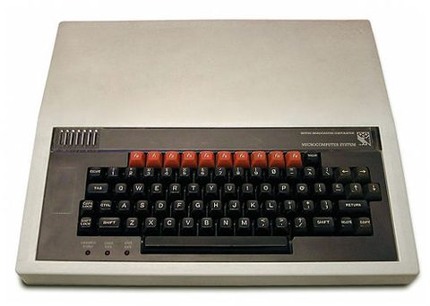
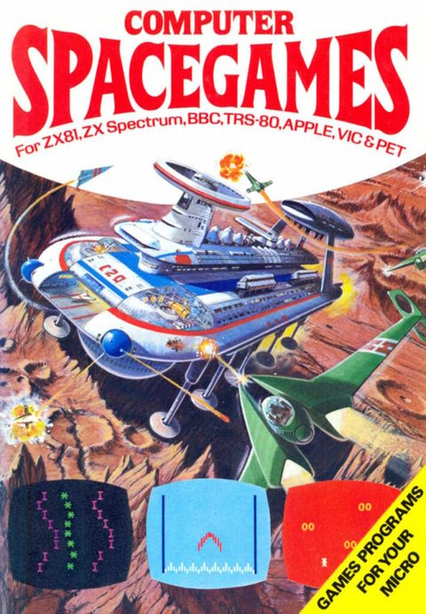
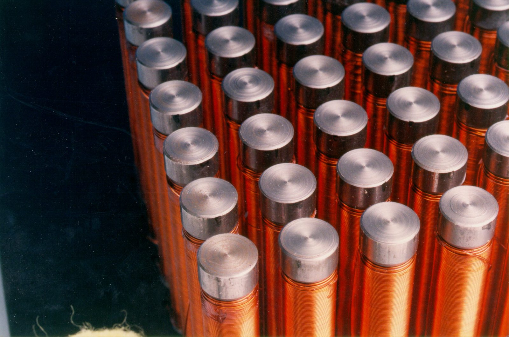

Grey-beard software programmer, geek, engineer, and builder of things that need a V2.
This site has stuff on it that I think is cool. Because it is cool.
A BBC Micro at an early age, then mechatronics, then motorsport
electronics, then Formula One, then thirteen years building a software company and
selling it, then an MSc in AI, and now robots. Throughout: a workshop,
and a persistent
inability to leave things intact.
Walking in Austria. I'm the one on the right
The through-line
How hard can it be?
These jobs are in quite different industries, but the problems have often
been surprisingly similar. Something has to work in the real world, and you
need to find out whether it actually does. Engine test rigs, payment
platforms, robots - different versions of much the same problem.
How do we know this is really working?
1984-ish
A BBC Micro, and a book of listings
My dad bought me a BBC B micro, I loved reading the manuals - they
included details about the hardware and how the machine worked. I
typed in listings from magazines and books, and really enjoyed
playing with "my computer" - now there seems to be a movement that
says "this isn't your machine" - my hardware, I can do what I want
with it.

Type this in. Carefully.

The source material
School
A hovercraft, and a robot CD player
I made a model hovercraft for GCSE - including building my own PWM
speed controller. And a robot CD player at A level - an arm would
pick up the CD, place it on a player, lower the puck and then play
it (controlled by a BBC B).
1997
Mechatronics at Leeds
BEng in Mechatronics: I was instantly drawn to this degree, it
suited me perfectly, and it was great meeting other people who also
knew the Maplin catalogue inside out. My final-year project was
a robotic chessboard, which won an award and moved the pieces itself.

The chessboard's magnet array, wound by hand
1997–2003
Motorsport electronics
Pi Research (later Cosworth). Embedded C, engine controllers,
sensors, wiring looms,
CAN and serial integration, telemetry, fuel simulation, engine-test automation.
Trackside debugging is quite stressful and high pressure. You need to keep a clear
head and arrive at a solution in a short period of time.
2003–2006
Formula One
Two years at Jaguar Racing programme-managing the cross-functional design,
manufacture and build of race-ready cars, then R&D at Red Bull Racing on
sensors, actuators, software, hardware and automated systems.
F1 is interesting: the deadlines don't move, everybody is very clever and
motivated, and you get tested every two weeks in a way that isn't arguable.
2006–2019
Co-founding Aeriandi
Thirteen years co-founding and building a secure B2B SaaS company,
as CTO and chief
architect, and hands-on the whole way. We ended up with 40 staff,
£8M ARR, and
a patented PCI voice-payment platform carrying more than half of UK
utilities' phone
payments.
I learned that a good company comes down to hiring good people and trusting your
teammates.
2019–2024
Merger and then acquisition
Aeriandi merged with Voxygen to become Speik, which was then acquired by Dubber,
where I ran technical strategy, platform reliability and compliance
for EMEA. Around
300 production services across AWS, Azure and on-prem.
Also, in parallel, I was principal contractor on a self-built
family home. The one with the curved walls, which definitely added to the
complexity.
2025–2026
Going back to school on purpose
An AI residency at the ML Institute, then an MSc in Artificial Intelligence at
Leeds, finished with Distinction. Nine taught modules and a dissertation on robot
learning: MuJoCo simulation, teleoperation through a VR headset, PyTorch policies,
and then the awkward business of testing them on hardware that has friction in it.
Now
Robots, and a workshop
Staff engineer at NeoIntralogistics, building warehouse systems that coordinate
autonomous mobile robots and Universal Robots arms.
The rest of the time I am in the workshop, and that is what most of this site is
about.
What I care about
Three things I keep coming back to
Real evidence
I want to know whether a system is actually better, not whether the graph looks
nicer.
Open teams
Trust, challenge, humour and people playing their position on the pitch.
Physical consequences
Software is more interesting when it moves hardware, handles real users or has to survive reality.
Contact
Say hello.
Oxford, UK. Happy to talk about robots, reliability, steel, or why your simulator is
lying to you.